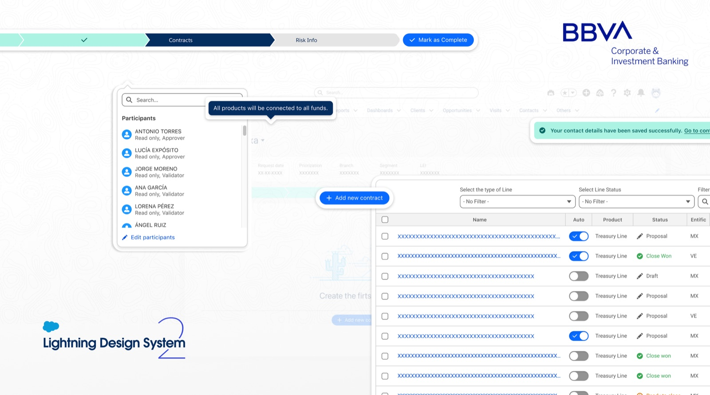
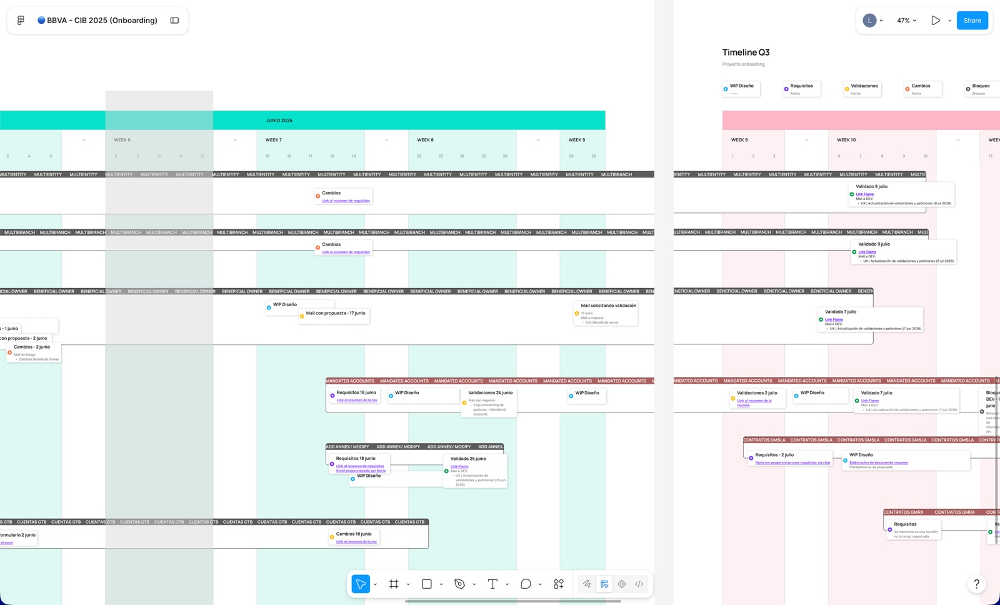
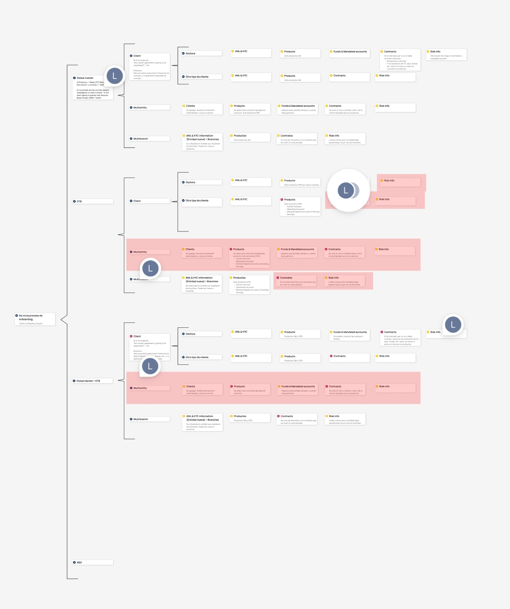
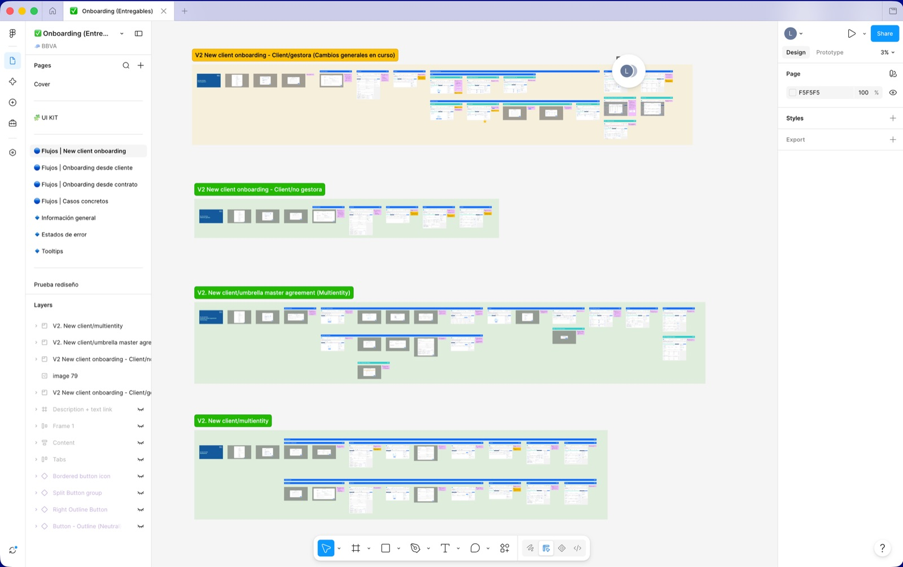
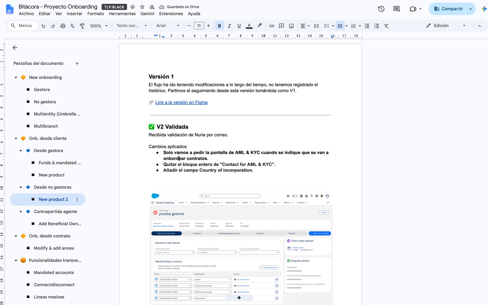
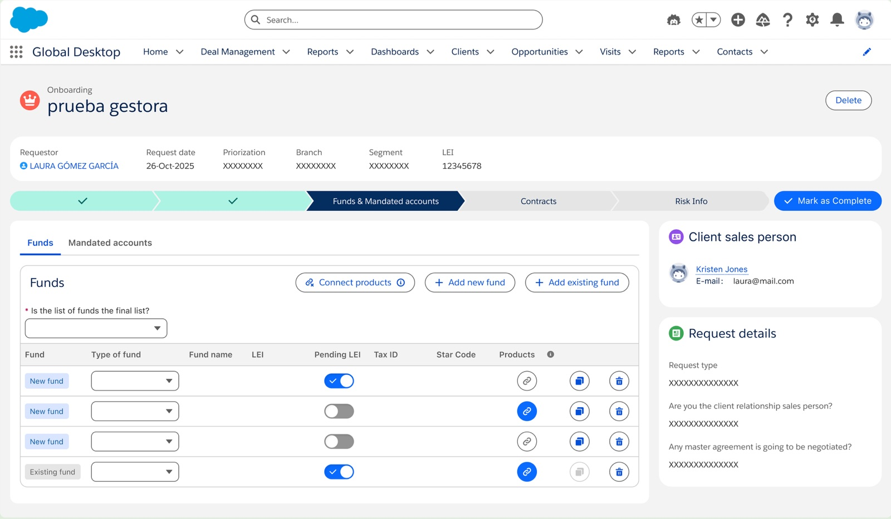
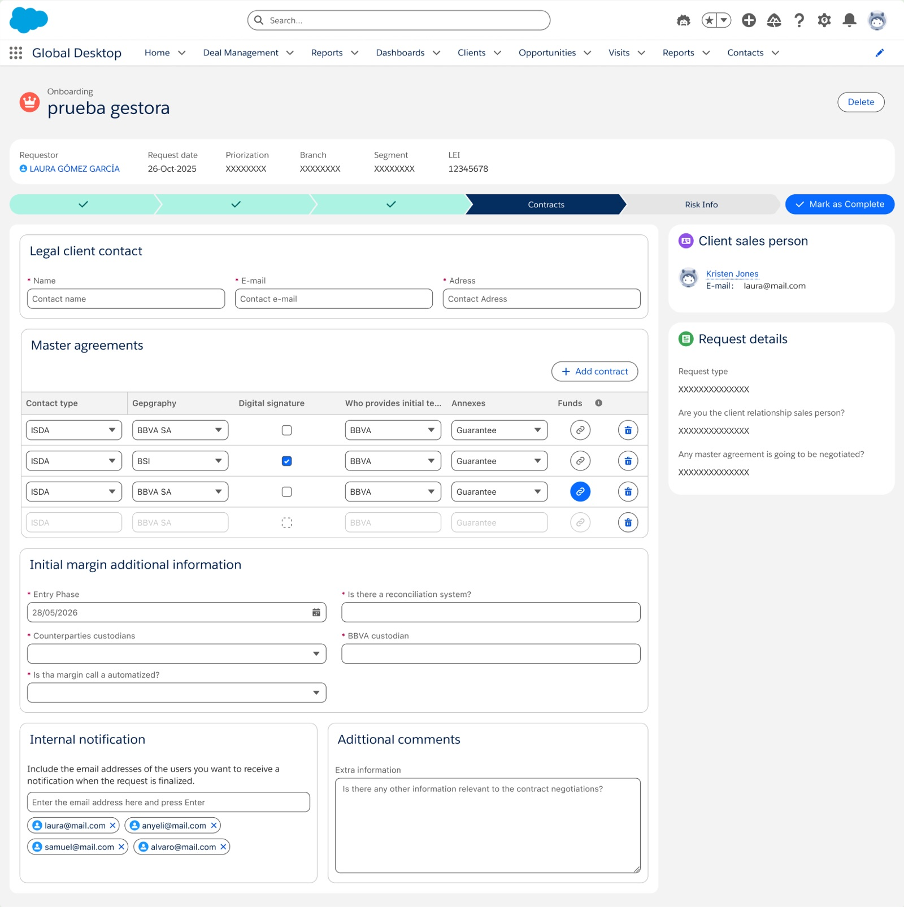
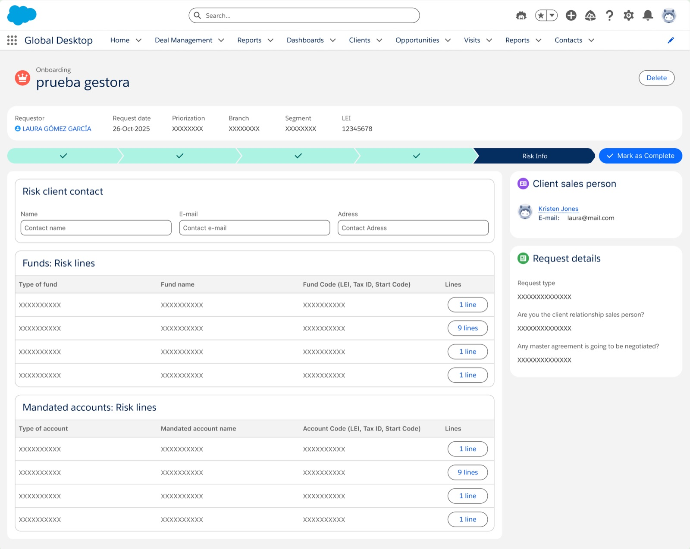
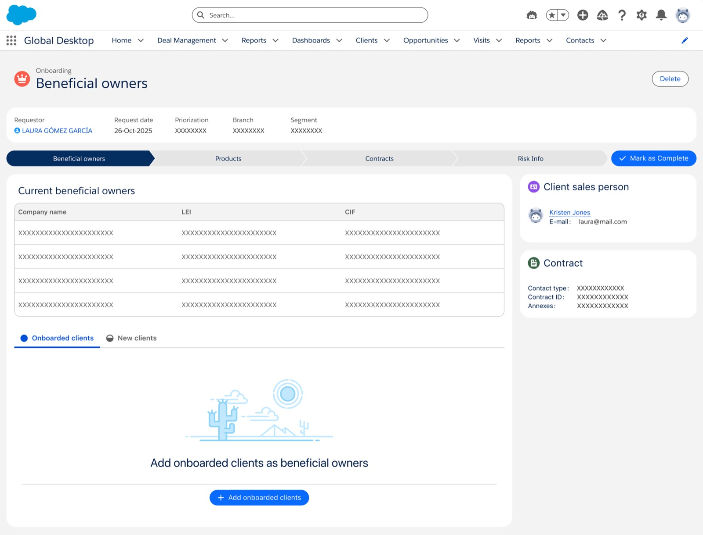

03
BBVA · Salesforce
Diseño y mejora de flujos
Trabajo actualmente en la evolución del ecosistema de Salesforce de BBVA, definiendo y mejorando flujos a partir de necesidades de negocio y usuarios.

Mi papel
UX/UI Designer.
En qué trabajo
Mantengo un contacto constante con negocio para entender las necesidades, definir soluciones y aterrizarlas en flujos y funcionalidades. Diseño las interfaces siguiendo el Lightning Design System 2 y trabajo junto a desarrollo durante la implementación y revisión de las soluciones.
Proceso
- Necesidad
- Conversaciones con negocio
- Definición del flujo
- Validaciones con desarrollo
- Diseño
- Validaciones con negocio
- Desarrollo
- Revisión
Gestión de versiones y cambios

Definición de la arquitectura

Construcción de flujos

Documentación

Algunas pantallas en detalle




Nota de confidencialidad. La información, documentación e imágenes incluidas en estos proyectos es confidencial y se muestra únicamente con fines de portfolio. Su contenido no debe ser reproducido, distribuido ni utilizado sin autorización.